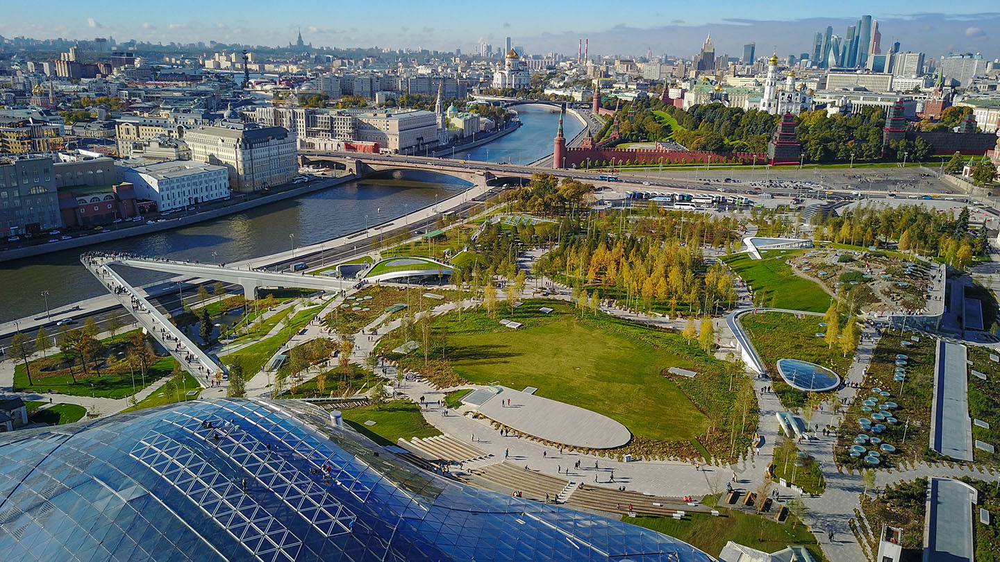
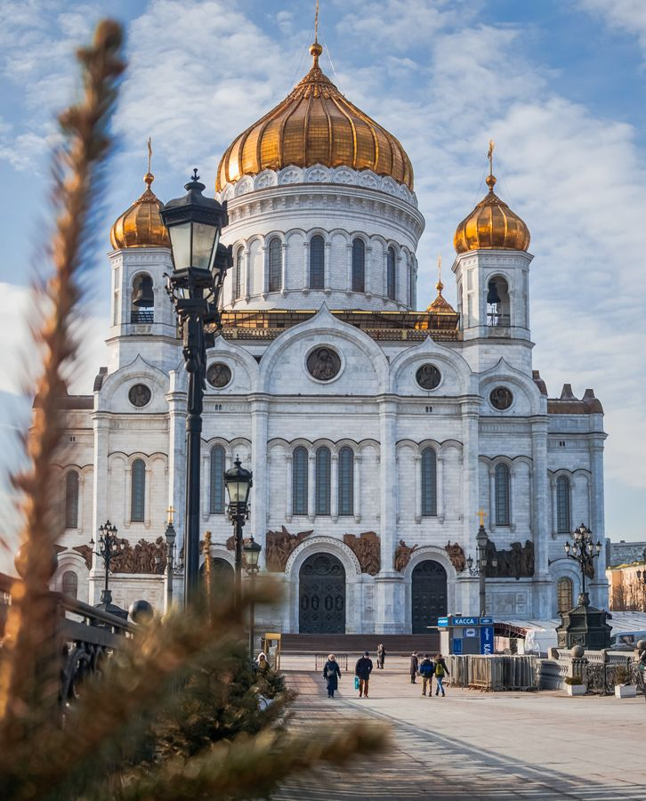
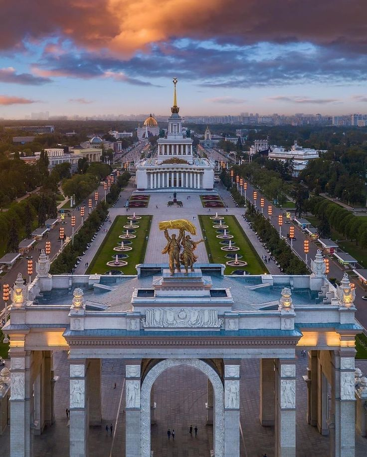
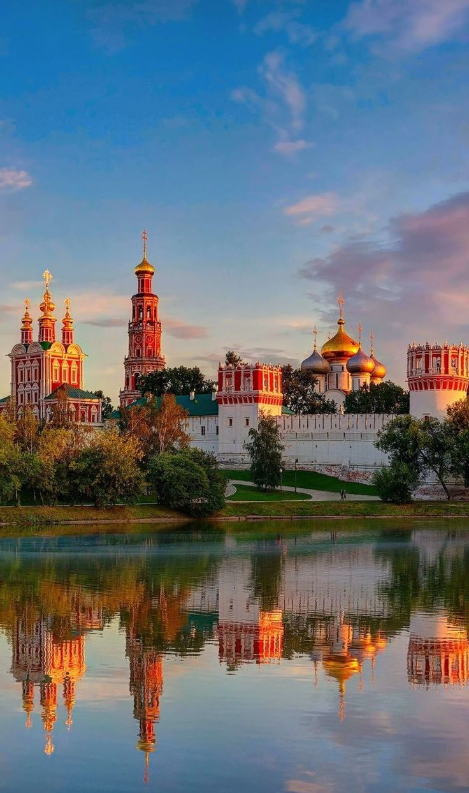
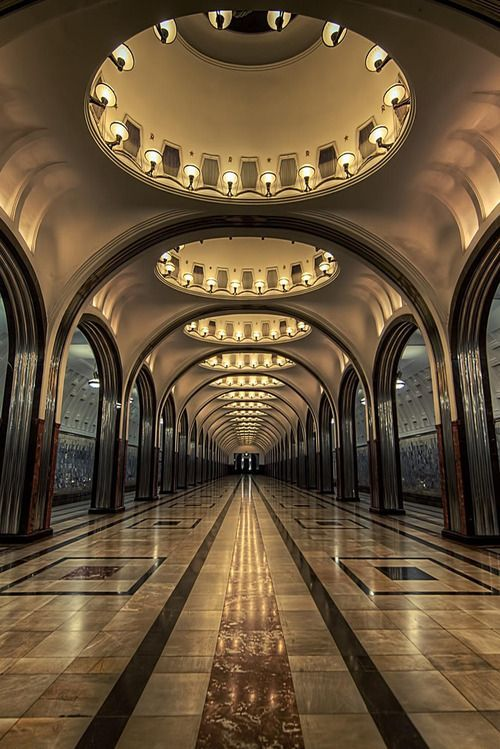
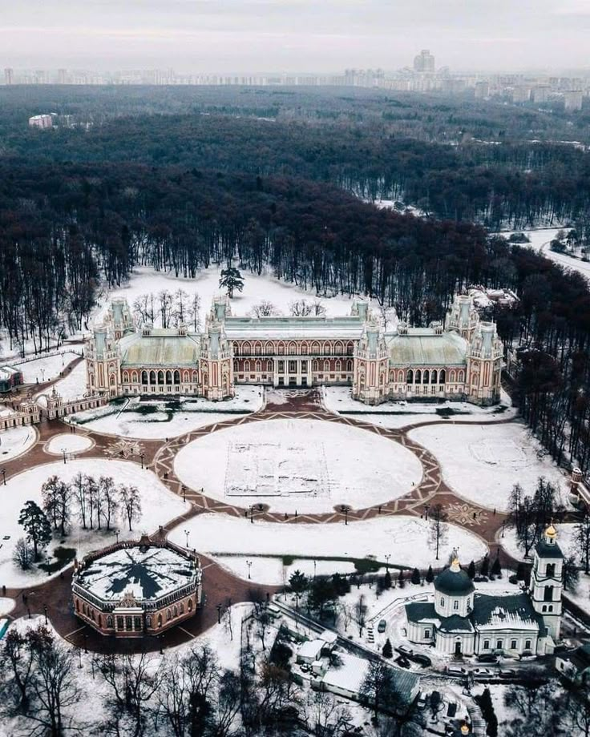

PONTOS
TURÍSTICOS

Moscou, capital da Rússia, é um destino que combina tradição e modernidade. Reconhecida por seus monumentos
históricos, museus renomados e praças de grande importância cultural, a cidade revela sua grandiosidade em
cada
detalhe arquitetônico.
Conheça os principais pontos turísticos e descubra porque Moscou é considerada uma
das
metrópoles mais fascinantes do mundo.

Catedral S. Basílio
Com suas cúpulas coloridas em forma de cebola, é o símbolo mais conhecido de Moscou e um dos marcos mais
fotografados da Rússia.
Praça Vermelha, nº 7

Parque Zaryadye
Parque moderno no centro da cidade, conhecido por sua arquitetura inovadora e bela vista do Kremlin.
Ulitsa Varvarka, nº 6

Teatro Bolshoi
Um dos teatros de balé e ópera mais prestigiados do mundo, símbolo da cultura russa.
Praça Teatralnaya, nº 1

Praça Vermelha
O coração de Moscou, palco de eventos e cercada por monumentos históricos impressionantes.
Praça Vermelha, Centro de Moscou

Parque Górki
Área verde popular entre turistas e locais, ideal para passeios, esportes e lazer.
Rua Krymsky Val, nº 9

Catedral Cristo Salvador
Uma das maiores catedrais ortodoxas do mundo, reconstruída após a queda da União Soviética.
Rua Volkhonka, nº 15

Museu Estatal de História
Um museu que guarda artefatos da história russa, da pré-história até o século XX.
Praça Vermelha, nº 1

VDNKh
Um enorme complexo de pavilhões, fontes e monumentos que celebra as conquistas da União Soviética.
Prospekt Mira, nº 119

Moscow City
Conjunto moderno de arranha-céus que representa o lado futurista da capital russa.
Distrito Presnensky

Universidade Estatal de Moscou
Universidade mais prestigiada da Rússia. É um dos “Sete Arranha-Céus de Stálin”, considerada um marco
arquitetônico da cidade.
Ulitsa Leninskiye Gory, nº 1

GUM
Famoso shopping histórico de luxo, localizado na Praça Vermelha, conhecido por sua arquitetura
impressionante e galerias cobertas.
Praça Vermelha, nº 3

Mosteiro Novodevichy
Um dos mosteiros mais importantes e belos de Moscou, patrimônio da UNESCO, famoso por sua arquitetura
barroca russa.
Rua Novodevichy Passage, nº 1

Metrô de Moscou
O Metrô de Moscou é conhecido como “palácio subterrâneo” por suas estações luxuosas, como Komsomolskaya e
Mayakovskaya.
Várias estações em Moscou.

Tsaritsyno
Um grande palácio e parque mandado construir por Catarina, a Grande. Hoje é um museu e espaço cultural
com belos jardins.
Rua Dolskaya, nº 1

Museu Pushkin de Belas Artes
Um dos maiores museus de arte da Rússia, com obras de mestres europeus como Rembrandt, Monet e Picasso
Rua Volkhonka, nº 12